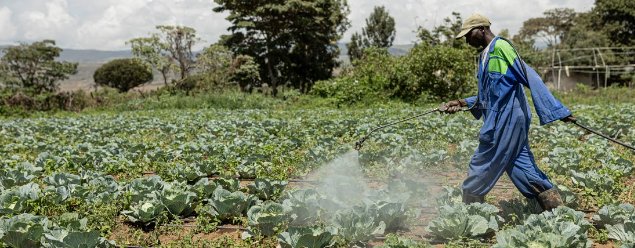
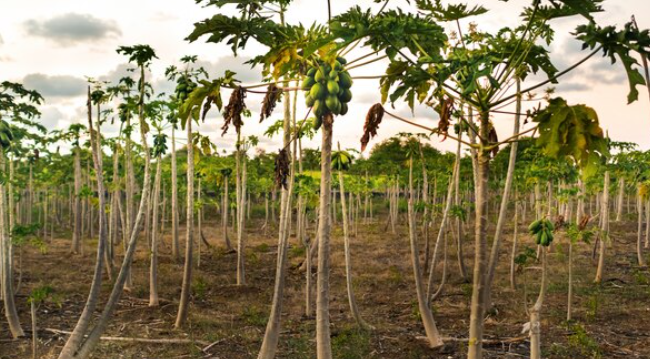

Unsere Plantagen
Ein Einblick in die Nachhaltigkeit und Effizienz unserer Arbeit.

Unsere Vision
SKF setzt sich für nachhaltige und umweltfreundliche Landwirtschaft ein. Unsere Plantagen stehen für Innovation und Qualität.
Lokale Partnerschaften
Wir arbeiten eng mit lokalen Gemeinden zusammen, um faire Arbeitsbedingungen zu schaffen und die Umwelt zu schützen.

Nachhaltige Produktion
Unsere Plantagen sind Vorreiter in der Nutzung moderner Technologien, um Ressourcen effizient zu nutzen und hochwertige Produkte anzubieten.
Unsere Werte
Bei SKF Plantagen legen wir großen Wert auf Nachhaltigkeit, soziale Verantwortung und Transparenz. Wir engagieren uns aktiv für die Rechte der Arbeiter und die Schonung der Umwelt.